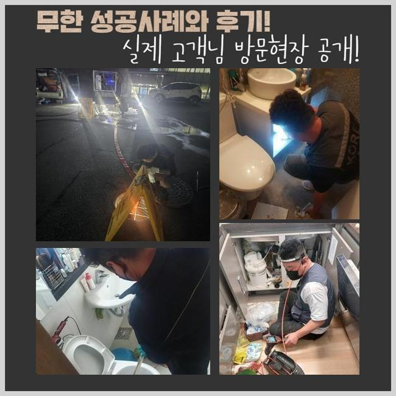
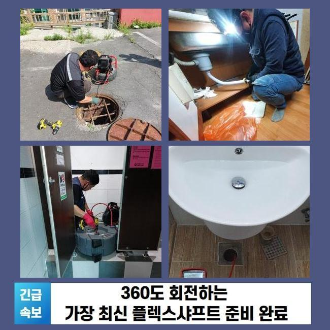
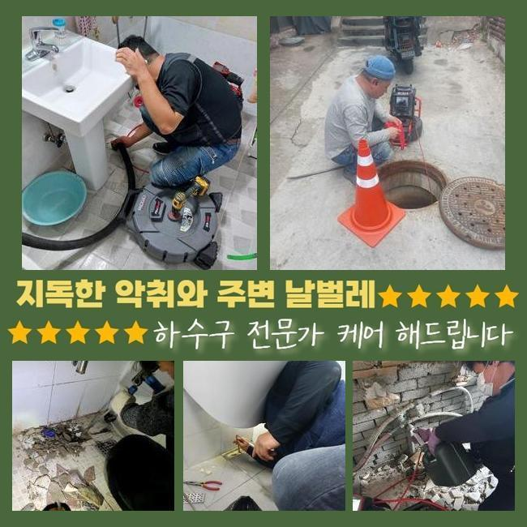
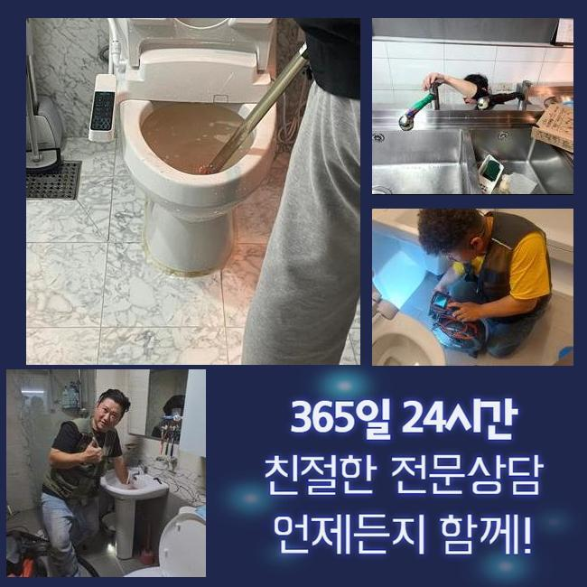
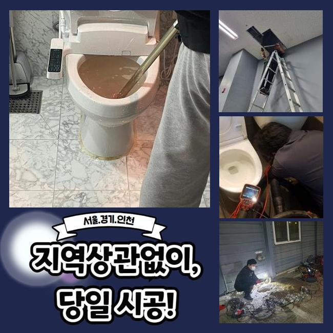
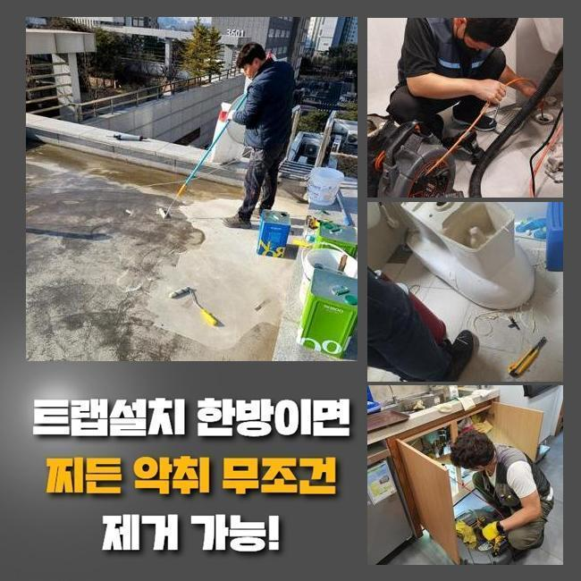
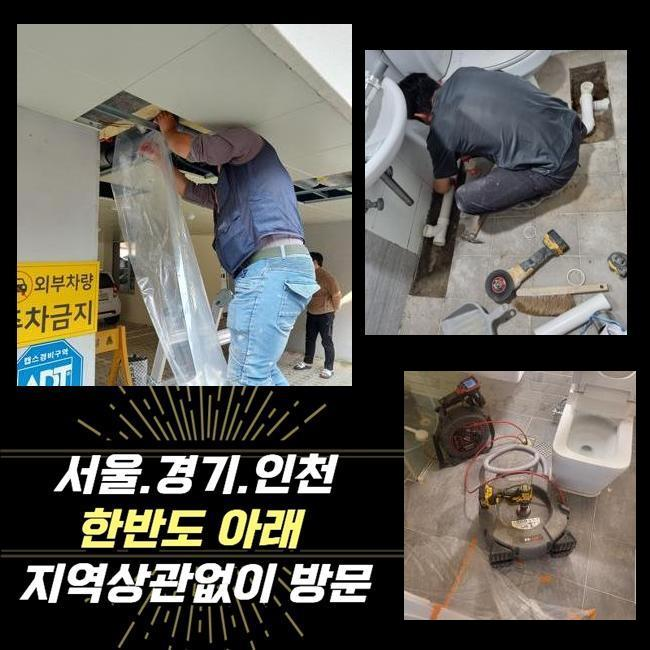

🏠 덕진구 씽크대하수구막힘 배관공사비용 씽크대물막힘 변기고압세척
용인 싱크대막힘 전문 시공 후기

📋 작업 개요
- 위치: 용인
- 서비스 유형: 싱크대막힘, 변기막힘, 하수구막힘, 배관막힘, 역류해결, 뚫는업체, 배관청소, 고압세척, 설비공사, 악취차단
- 작업 일시: 2025. 1. 4. 21:51
- 업체명: 하수구수사대 (010-5615-2118)
🔍 문제 상황
덕진구 씽크대하수구막힘 배관공사비용 씽크대물막힘 변기고압세척
일상생활시 가끔 일어나는 문제들이 있죠
대표적으로 관로막힘을 말씀드릴수 있어요
배관이 막혀버리면 오취가 퍼지는것을 비롯하여 일상생활의 스트레스를 증가시키죠
배수불가 사태로 인해 욕실사용을 하지못하고 역류상황까지 일어난다면 최악의 상황까지 치닫게 될것입니다
금번에는 투룸 세탁실 배관막힘으로 여러가지의 장비류를 적용해서 정리한 공정을 안내해 드리도록 할게요
의뢰인분은 주방 바로 옆에 설치된 세탁기기에서 물막힘이 일어났다며 저희측으로 문의하셨는데요
시공차량에 플렉스샤프트와 배관카메라 등의 진단기기를 챙긴후 고객세대로 출발하였죠
방문하였더니 고린내가 가득차 있었으며 역류까지 되는 정황을 관측할수 있었답니다
세탁기가동을 통하여 배수를 시켜보려고 노력했지만 반대로 넘쳐버리는 형국이 발발하였다고 하소연하셨어요
단순히 세제성분만 역류되는게 아니었으며 여러가지 오물들도 나오는 상황이었답니다
어떤 설비에서는 주방시설과 세탁실의 관로가 연결된 케이스도 확인할수 있어요
그부분 역시 확인하기로 했답니다
정황을 면밀하게 알아보려 의뢰자께 욕실부근이나 또다른 관로에 막힘이 일어났거나 역류증세가 생긴적은 없었는지에 대해 여쭸는데요

🔎 원인 분석
💡 전문가 진단: 정밀 진단 장비를 사용하여 슬러지의 고착 여부를 판명하고 타격/세척 작업을 실시했습니다.
그저께 물빠짐이 안되어서 마트에서 산 구연산과 세제를 부어본적이 있다고 하셨죠
이에 따라 싱크공간과 관계된 배관에 막힘의 원인이 있을거라 추정했답니다
저희측이 내방드린 현장의 막힘을 처치하려 사유를 살피기로 했죠
내시경기기를 이용해 하수도안을 검사해보기로 결정했죠
배수문이 막혀 내부에 내시경을 넣지 못할땐 물청소가 가능한 고압흡입기로 관로의 오물들을 처리하게 됩니다
해당 공정으로 시공시간을 줄일수가 있어요
세척공정 중에 상당량의 오물들과 찌꺼기들이 배출된것을 확인하였는데요
하지만 해당 업무만으로는 근본적인 물막힘 사유가 어떠한건지 밝혀내지는 못했답니다
초기에 실행한 흡입장비로 소제할수 없는것들이 상당하였기에 곧바로 내시경카메라를 집어넣어서 관로의 상황을 관찰하기로 했어요
상태를 자세하게 조사하니 해안에 많이 보이는 모래알갱이들이었어요
빨래를 하시다가 방출된 상황일 가망이 컸죠
손님께 휴가를 다녀오셨나 물어보았더니 부산쪽의 바닷가에 가셨다고 말해주셨어요
먼저 자잘한 이물들을 처리하고 더욱 전면적으로 세정시공을 실행합니다
그러면서 하단부위까지 정리할수 있는 기계들을 사용하기로 했습니다

🔧 작업 과정
배관내시경을 쓰는건 막힘이 일어난 동기를 세세하게 조사하고 정체를 정리하기 위함이죠
흡입장비로 세척을 끝내고 가느스름한 호스줄에 붙어있는 내시경cctv로 관로 안을 조사해 보았어요
후미진 위치까지 확인했고 본질적인 막힘원인을 인지할수가 있었네요
보는바와 같이 물막힘과 역류는 여러종류의 변수들에 의해서 일어나는 양상을 보이고 해결방안이 단순한것도 아니라고 말씀드려요
그렇기때문에 전문적인 기계들을 토대로 수리를 진행하여야 순조롭게 정리할수 있어요
만약에 어설프게 막힘문제를 정리하려든다면 한층더 정체가 심화될수 있단걸 기억해주시길 당부드려요
배수관 군데군데를 배관카메라로 진단하였어요
관의 기장은 생각한것보다 긴편이고 모양도 다양해서 바로 이해하기에는 역부족일수 있죠
이러한 상황에서는 가느다란 내시경카메라가 확실한 기능을 할수가 있답니다
배관내시경을 이용해서 내측을 자세하게 파악해보니 다양한 노폐물들과 잔모래같은 이물들이 뒤엉켜있는 모습이었습니다
이러한 고형물들은 적체되기 쉬우며 관로에 흡착하여 경화되기 쉽답니다
미미한 것들은 배수관을 통해 쉬이 오수탱크로 이동하겠지만 그것이 한번에 몰려서 투입돼버리면 이 지점처럼 물막힘이 발발할수가 있어요
또한 그런 정황이 계속된다면 배수관에 단단한 물질층이 생성되기도 하죠
잔재들의 성질에 따라 사용되는 장비들이 달라요
예시를 들어 헝겊등의 폐기물이 누증되어 있다면 쇠갈고리 등을 투입하여 꺼낸다음에 흡입기계로 관로 안을 청소해야 됩니다
혹시라도 이러한 과정을 생략하고 샤프트기기를 바로 적용해버리면 배수관 속이 한층 나빠지기 쉽습니다
이물들이 특정한 공간에 상당량 상존할때는 인위적으로 파쇄하는 업무를 속행하는데요
이장소는 돌맹이들과 뒤섞여 있었기에 샤프트로 제거하고 뚫음시공을 진행한거죠
해당 현장에선 전체 이물들을 없앤다음에 내시경기기로 또다시 진단을 실시했어요
그러고나서 남아있는건 분쇄기기로 말끔히 처리하고 즉각 통수관련 검사를 실시했는데요
이상없이 속시원히 흘러내려가는걸 확인하였습니다
공사현장에서 토출된 지저분한 것들을 전부 정리해서 폐기처리하는걸로 절차를 마감하였어요


✅ 작업 완료
이러한 막힘증세를 차단하려면 정기적으로 하수구 진단해보았고 세척해야 하겠죠
주방시설의 배수설비에선 기름찌꺼기들이 물막힘을 야기하고 역류를 일으킬때가 많아요
해당 상황에 직면하면 방치하지말고 곧바로 전문가를 찾아보시는게 합리적인 선택입니다
보통사람들이 처치할수있는 구간은 근본적인 처방에 다다르기 힘들고 더더욱 사태가 악화되는 일도 자주 볼수 있어요
전문가의 클리닝과정은 단순히 일상을 정상화시키는걸 넘어서서 청결성을 지속시키는데도 긴요한 기능을 수행하죠
또 그문제가 지속된다면 타주민에게도 곤란한 상황을 야기할수 있다는것을 알아두시길 부탁드립니다




⚠️ 주방 싱크대 배관 막힘 예방 수칙
- ✅ 기름기가 묻은 식기나 프라이팬은 설거지 전 키친타올로 반드시 기름때를 닦아내세요.
- ✅ 주기적으로 싱크대 개수대에 뜨거운 물을 가득 받아 한 번에 내려 배관 내부 기름을 씻어내세요.
- ✅ 배수구 거름망을 미세한 필터로 사용하시고 음식물 찌꺼기가 틈으로 새어 들지 않게 관리하세요.
- ✅ 베이킹소다와 식초를 뜨거운 물과 함께 일주일에 한 번씩 부어주면 배관 살균과 막힘 예방에 좋습니다.
💡 핵심 정리
- 확실한 장비 작업(내시경 점검 및 샤프트 스케일링)으로 원인을 뿌리 뽑습니다.
- 작업 후 1년 이내에 동일한 부위 재발 시 100% 무상 A/S 서비스를 보장합니다.
- 서울 · 경기 · 인천 전 지역에 24시간 언제든 긴급 출동할 수 있도록 항시 대기 중입니다.
❓ 자주 묻는 질문 (FAQ)
🚨 용인 싱크대막힘 문제로 고민이신가요?
정확한 원인 진단과 확실한 시공으로 재발 없는 해결을 약속드립니다.
24시간 긴급 출동 | 서울 · 경기 · 인천 전지역 | 1년 내 재발 시 무상 A/S